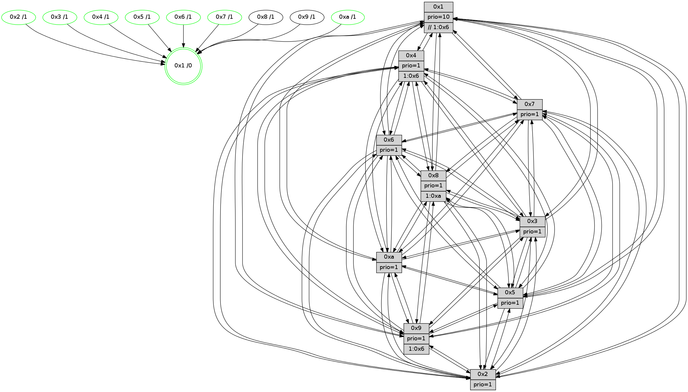

>> << IDX [start] -100 -25 -5 +0 +5 +25 +100 [1150.31167412]
 Previous packets
----------------------------------------------------------------------
1145.582893 beacon01(faad) #0 coord=01,02,03,04,05,06,07,0a,09,08 cycle=688.0ms assoc
-- color-indic=1 64 8f 03
1145.592875 beacon02(faad) #0 coord=01,02,03,04,05,06,07,0a,09,08 cycle=688.0ms assoc 64 1c 32
1145.602875 beacon03(faad) #0 coord=01,02,03,04,05,06,07,0a,09,08 cycle=688.0ms assoc 64 66 7f
1145.612875 beacon04(faad) #0 coord=01,02,03,04,05,06,07,0a,09,08 cycle=688.0ms assoc 64 11 95
1145.622876 beacon05(faad) #0 coord=01,02,03,04,05,06,07,0a,09,08 cycle=688.0ms assoc 64 6b d8
1145.632876 beacon06(faad) #0 coord=01,02,03,04,05,06,07,0a,09,08 cycle=688.0ms assoc 64 e5 0f
1145.642875 beacon07(faad) #0 coord=01,02,03,04,05,06,07,0a,09,08 cycle=688.0ms assoc 64 9f 42
1145.652881 beacon0a(faad) #0 coord=01,02,03,04,05,06,07,0a,09,08 cycle=688.0ms assoc 64 ee 49
1145.662881 beacon09(faad) #0 coord=01,02,03,04,05,06,07,0a,09,08 cycle=688.0ms assoc 64 60 9e
1145.672883 beacon08(faad) #0 coord=01,02,03,04,05,06,07,0a,09,08 cycle=688.0ms assoc 64 1a d3
1145.688532 [Hello(7): seq=731 sym=2,3,5,6,4,8,9,10,1 sysInfo=hasWarning stat=2:15,1,9,1/3:2,8,7,15/5:5,4,4,1/6:0,12,4,9/4:0,13,4,1/8:9,5,12,1/9:3,1,8,1/10:13,15,10,5/1:2,6,10,0]
1145.692009 [Color(7) seq=277 @0:0 prio=1]
1145.694279 [Hello(10): seq=664 sym=6,2,3,8,7,5,9,4,1 sysInfo=hasWarning stat=6:9,6,1,6/2:8,15,2,10/3:8,12,6,11/8:15,12,8,1/7:11,13,0,6/5:2,15,12,14/9:3,15,1,2/4:6,0,1,0/1:0,15,5,1]
1145.699081 [Color(5) seq=325 @0:0 prio=1]
1145.703663 [Hello(4): seq=731 sym=5,7,6,2,3,9,8,10,1 sysInfo= stat=5:3,2,14,15/7:8,6,2,1/6:8,6,15,12/2:9,10,9,14/3:4,2,0,11/9:12,13,4,11/8:12,0,15,5/10:11,0,9,13/1:10,14,11,1]
1145.709826 [Color(1) seq=412 @0:0 prio=10 >>1.@6,1.@7,1.@8]
----------------------------------------------------------------------
1146.371023 beacon01(faad) #0 coord=01,02,03,04,05,06,07,0a,09,08 cycle=688.0ms assoc
-- color-indic=1 64 1b da
1146.381005 beacon02(faad) #0 coord=01,02,03,04,05,06,07,0a,09,08 cycle=688.0ms assoc 64 88 eb
1146.391005 beacon03(faad) #0 coord=01,02,03,04,05,06,07,0a,09,08 cycle=688.0ms assoc 64 f2 a6
1146.401006 beacon04(faad) #0 coord=01,02,03,04,05,06,07,0a,09,08 cycle=688.0ms assoc 64 85 4c
1146.411005 beacon05(faad) #0 coord=01,02,03,04,05,06,07,0a,09,08 cycle=688.0ms assoc 64 ff 01
1146.431007 beacon07(faad) #0 coord=01,02,03,04,05,06,07,0a,09,08 cycle=688.0ms assoc 64 0b 9b
1146.441011 beacon0a(faad) #0 coord=01,02,03,04,05,06,07,0a,09,08 cycle=688.0ms assoc 64 7a 90
1146.451010 beacon09(faad) #0 coord=01,02,03,04,05,06,07,0a,09,08 cycle=688.0ms assoc 64 f4 47
1146.461012 beacon08(faad) #0 coord=01,02,03,04,05,06,07,0a,09,08 cycle=688.0ms assoc 64 8e 0a
1146.472231 [Hello(5): seq=732 sym=7,6,4,3,1,9,8,10,2 sysInfo=hasWarning stat=7:9,2,5,13/6:8,7,7,2/4:9,12,13,12/3:10,4,13,13/1:5,13,14,1/9:12,0,15,9/8:5,7,9,1/10:15,2,12,8/2:6,5,15,6]
1146.475218 [Hello(2): seq=728 sym=4,5,7,6,3,9,8,10,1 sysInfo=hasWarning stat=4:4,11,3,10/5:5,10,10,0/7:14,6,4,14/6:2,7,12,11/3:10,4,11,8/9:15,8,12,6/8:10,11,4,10/10:10,1,0,10/1:7,1,7,0]
1146.478250 [Hello(3): seq=732 sym=1,7,6,4,8,9,10,5 sysInfo=hasWarning stat=1:15,7,8,0/7:13,9,11,12/6:1,4,1,0/4:10,9,14,11/8:10,6,8,3/9:8,8,1,13/10:0,2,11,4/5:14,14,5,15]
1146.480950 [Color(10) seq=321 @0:0 prio=1]
1146.484799 [Hello(6): seq=732 sym=2,3,5,4,7,9,8,10,1 sysInfo=hasWarning stat=2:9,13,1,7/3:9,15,13,11/5:12,0,14,1/4:10,2,8,5/7:11,8,3,12/9:14,0,2,7/8:13,13,13,4/10:6,14,3,12/1:7,10,11,1]
1146.488248 [Color(3) seq=361 @0:0 prio=1]
1146.489557 [Color(6) seq=364 @0:0 prio=1]
1146.491765 [Color(2) seq=308 @0:0 prio=1]
----------------------------------------------------------------------
1147.159153 beacon01(faad) #0 coord=01,02,03,04,05,06,07,0a,09,08 cycle=688.0ms assoc
-- color-indic=1 64 a7 df
1147.169136 beacon02(faad) #0 coord=01,02,03,04,05,06,07,0a,09,08 cycle=688.0ms assoc 64 34 ee
1147.179136 beacon03(faad) #0 coord=01,02,03,04,05,06,07,0a,09,08 cycle=688.0ms assoc 64 4e a3
1147.189137 beacon04(faad) #0 coord=01,02,03,04,05,06,07,0a,09,08 cycle=688.0ms assoc 64 39 49
1147.199135 beacon05(faad) #0 coord=01,02,03,04,05,06,07,0a,09,08 cycle=688.0ms assoc 64 43 04
1147.209137 beacon06(faad) #0 coord=01,02,03,04,05,06,07,0a,09,08 cycle=688.0ms assoc 64 cd d3
1147.219137 beacon07(faad) #0 coord=01,02,03,04,05,06,07,0a,09,08 cycle=688.0ms assoc 64 b7 9e
1147.229142 beacon0a(faad) #0 coord=01,02,03,04,05,06,07,0a,09,08 cycle=688.0ms assoc 64 c6 95
1147.239141 beacon09(faad) #0 coord=01,02,03,04,05,06,07,0a,09,08 cycle=688.0ms assoc 64 48 42
1147.249144 beacon08(faad) #0 coord=01,02,03,04,05,06,07,0a,09,08 cycle=688.0ms assoc 64 32 0f
1147.260627 [Hello(8): seq=676 sym=5,2,3,4,9,6,7,10,1 sym= sysInfo=hasWarning stat=]
1147.264007 [Hello(10): seq=665 sym=6,2,3,8,7,5,9,4,1 sysInfo=hasWarning stat=6:10,7,1,6/2:9,0,2,10/3:8,13,6,11/8:15,12,8,1/7:11,13,0,6/5:2,0,12,14/9:3,15,1,2/4:7,0,1,0/1:1,0,5,1]
1147.267187 [Hello(7): seq=732 sym=2,3,5,6,4,8,9,10,1 sysInfo=hasWarning stat=2:0,2,9,1/3:3,9,7,15/5:6,5,4,1/6:1,13,4,9/4:1,13,4,1/8:10,5,12,1/9:3,1,8,1/10:14,0,10,5/1:2,7,10,0]
1147.269798 [Hello(9): seq=676 sym=2,5,3,4,7,6,8,10,1 sysInfo=hasWarning stat=2:13,11,10,8/5:6,0,9,5/3:0,4,0,15/4:0,0,0,0/7:7,5,1,1/6:13,1,6,11/8:5,11,13,3/10:11,2,1,4/1:15,12,11,1]
1147.272243 [Color(7) seq=278 @0:0 prio=1]
1147.273981 [Color(1) seq=413 @0:0 prio=10 >>1.@6,1.@7,1.@8]
1147.276838 [Hello(4): seq=732 sym=5,7,6,2,3,9,8,10,1 sysInfo= stat=5:4,2,14,15/7:8,6,2,1/6:9,7,15,12/2:10,11,9,14/3:5,3,0,11/9:12,13,4,11/8:12,0,15,5/10:11,1,9,13/1:10,15,11,1]
1147.281867 [Color(5) seq=326 @0:0 prio=1]
----------------------------------------------------------------------
1147.947285 beacon01(faad) #0 coord=01,02,03,04,05,06,07,0a,09,08 cycle=688.0ms assoc
-- color-indic=1 64 63 d1
1147.957267 beacon02(faad) #0 coord=01,02,03,04,05,06,07,0a,09,08 cycle=688.0ms assoc 64 f0 e0
1147.967267 beacon03(faad) #0 coord=01,02,03,04,05,06,07,0a,09,08 cycle=688.0ms assoc 64 8a ad
1147.977267 beacon04(faad) #0 coord=01,02,03,04,05,06,07,0a,09,08 cycle=688.0ms assoc 64 fd 47
1147.987267 beacon05(faad) #0 coord=01,02,03,04,05,06,07,0a,09,08 cycle=688.0ms assoc 64 87 0a
1147.997268 beacon06(faad) #0 coord=01,02,03,04,05,06,07,0a,09,08 cycle=688.0ms assoc 64 09 dd
1148.007268 beacon07(faad) #0 coord=01,02,03,04,05,06,07,0a,09,08 cycle=688.0ms assoc 64 73 90
1148.017272 beacon0a(faad) #0 coord=01,02,03,04,05,06,07,0a,09,08 cycle=688.0ms assoc 64 02 9b
1148.027272 beacon09(faad) #0 coord=01,02,03,04,05,06,07,0a,09,08 cycle=688.0ms assoc 64 8c 4c
1148.037273 beacon08(faad) #0 coord=01,02,03,04,05,06,07,0a,09,08 cycle=688.0ms assoc 64 f6 01
1148.050084 [Hello(1): seq=642 sym=4,2,9,5,10,3,8,6,7 sysInfo=coloring-mode-on,ColoringModeRequestCalled stat=4:1,11,0,4/2:15,14,3,2/9:12,2,1,7/5:13,15,10,7/10:6,7,7,6/3:1,0,11,6/8:14,8,12,2/6:15,3,3,13/7:15,9,14,14]
1148.052803 [Hello(3): seq=733 sym=1,7,6,2,4,8,9,10,5 sysInfo=hasWarning stat=1:0,8,8,0/7:14,9,11,12/6:1,5,1,0/2:0,1,0,0/4:11,9,14,11/8:11,6,8,3/9:9,8,1,13/10:1,2,11,4/5:14,15,5,15]
1148.055612 [Color(3) seq=362 @0:0 prio=1]
1148.059020 [Hello(6): seq=733 sym=2,3,5,4,7,9,8,10,1 sysInfo=hasWarning stat=2:10,14,1,7/3:9,15,13,11/5:13,1,14,1/4:11,2,8,5/7:12,8,3,12/9:15,0,2,7/8:14,13,13,4/10:7,14,3,12/1:7,11,11,1]
1148.062671 [Hello(2): seq=729 sym=4,5,7,6,3,9,8,10,1 sysInfo=hasWarning stat=4:5,11,3,10/5:5,11,10,0/7:15,6,4,14/6:2,7,12,11/3:10,4,11,8/9:0,8,12,6/8:11,11,4,10/10:11,1,0,10/1:7,2,7,0]
1148.065183 [Hello(5): seq=733 sym=7,6,4,3,1,9,8,10,2 sysInfo=hasWarning stat=7:9,2,5,13/6:9,8,7,2/4:9,12,13,12/3:11,5,13,13/1:5,13,14,1/9:12,0,15,9/8:6,7,9,1/10:15,3,12,8/2:7,6,15,6]
1148.068707 [Color(6) seq=365 @0:0 prio=1]
1148.070097 [Color(2) seq=309 @0:0 prio=1]
1148.071443 [Color(10) seq=322 @0:0 prio=1]
1148.077118 [STC(1) #0.176 tree-change,inconsistent-stability,stable,to-color d=0]
----------------------------------------------------------------------
1148.735414 beacon01(faad) #0 coord=01,02,03,04,05,06,07,0a,09,08 cycle=688.0ms assoc
-- color-indic=1 64 df d4
1148.745395 beacon02(faad) #0 coord=01,02,03,04,05,06,07,0a,09,08 cycle=688.0ms assoc 64 4c e5
1148.755396 beacon03(faad) #0 coord=01,02,03,04,05,06,07,0a,09,08 cycle=688.0ms assoc 64 36 a8
1148.765398 beacon04(faad) #0 coord=01,02,03,04,05,06,07,0a,09,08 cycle=688.0ms assoc 64 41 42
1148.775398 beacon05(faad) #0 coord=01,02,03,04,05,06,07,0a,09,08 cycle=688.0ms assoc 64 3b 0f
1148.785400 beacon06(faad) #0 coord=01,02,03,04,05,06,07,0a,09,08 cycle=688.0ms assoc 64 b5 d8
1148.795399 beacon07(faad) #0 coord=01,02,03,04,05,06,07,0a,09,08 cycle=688.0ms assoc 64 cf 95
1148.805403 beacon0a(faad) #0 coord=01,02,03,04,05,06,07,0a,09,08 cycle=688.0ms assoc 64 be 9e
1148.815403 beacon09(faad) #0 coord=01,02,03,04,05,06,07,0a,09,08 cycle=688.0ms assoc 64 30 49
1148.825403 beacon08(faad) #0 coord=01,02,03,04,05,06,07,0a,09,08 cycle=688.0ms assoc 64 4a 04
1148.836389 [STC(6)->1 #0.176 tree-change,inconsistent-stability,stable,to-color d=1]
1148.837988 [STC(3)->1 #0.176 tree-change,inconsistent-stability,stable,to-color d=1]
1148.839434 [Hello(10): seq=666 sym=6,2,3,8,7,5,9,4,1 sysInfo=hasWarning stat=6:10,7,1,6/2:9,0,2,10/3:8,13,6,11/8:15,12,8,1/7:12,13,0,6/5:2,1,12,14/9:4,15,1,2/4:8,0,1,0/1:2,1,6,1]
1148.842157 [STC(5)->1 #0.176 tree-change,inconsistent-stability,stable,to-color d=1]
1148.843536 [STC(2)->1 #0.176 tree-change,inconsistent-stability,stable,to-color d=1]
1148.846033 [Color(5) seq=327 @0:0 prio=1]
1148.848694 [Color(1) seq=414 @0:0 prio=10 >>1.@6,1.@7,1.@8]
1148.854053 [STC(10)->1 #0.176 tree-change,inconsistent-stability,stable,to-color d=1]
1148.855714 [Hello(8): seq=677 sym=5,2,3,4,9,6,7,10,1 sysInfo=hasWarning stat=5:15,13,3,0/2:10,9,0,10/3:3,14,4,15/4:10,15,7,10/9:12,7,6,3/6:1,11,1,13/7:8,7,1,0/10:13,3,9,4/1:3,9,11,0]
1148.858495 [STC(4)->1 #0.176 tree-change,inconsistent-stability,stable,to-color d=1]
1148.862746 [TreeStatus(8)-.->1 #0.176 tree-change,inconsistent-stability,stable child=1]
1148.863875 [STC(9)->1 #0.176 tree-change,inconsistent-stability,to-color d=1]
1148.865486 [Hello(7): seq=733 sym=2,3,5,6,4,8,9,10,1 asym= sysInfo=hasWarning stat=2:1,3,9,1/3:4,10,7,15/5:7,6,4,1/6:2,14,4,9/4:2,13,4,1/8:11,5,12,1/9:3,1,8,1/10:14,1,10,5/1:3,8,11,0]
1148.868632 [STC(7)->1 #0.176 tree-change,inconsistent-stability,stable,to-color d=1]
1148.871853 [Color(7) seq=279 @0:0 prio=1]
----------------------------------------------------------------------
1149.523544 beacon01(faad) #0 coord=01,02,03,04,05,06,07,0a,09,08 cycle=688.0ms assoc
-- color-indic=1 64 eb cc
1149.533526 beacon02(faad) #0 coord=01,02,03,04,05,06,07,0a,09,08 cycle=688.0ms assoc 64 78 fd
1149.543526 beacon03(faad) #0 coord=01,02,03,04,05,06,07,0a,09,08 cycle=688.0ms assoc 64 02 b0
1149.553527 beacon04(faad) #0 coord=01,02,03,04,05,06,07,0a,09,08 cycle=688.0ms assoc 64 75 5a
1149.563527 beacon05(faad) #0 coord=01,02,03,04,05,06,07,0a,09,08 cycle=688.0ms assoc 64 0f 17
1149.573526 beacon06(faad) #0 coord=01,02,03,04,05,06,07,0a,09,08 cycle=688.0ms assoc 64 81 c0
1149.583527 beacon07(faad) #0 coord=01,02,03,04,05,06,07,0a,09,08 cycle=688.0ms assoc 64 fb 8d
1149.593531 beacon0a(faad) #0 coord=01,02,03,04,05,06,07,0a,09,08 cycle=688.0ms assoc 64 8a 86
1149.613531 beacon08(faad) #0 coord=01,02,03,04,05,06,07,0a,09,08 cycle=688.0ms assoc 64 7e 1c
1149.624786 [Hello(1): seq=643 sym=4,2,9,5,10,3,8,6,7 sysInfo=coloring-mode-on,ColoringModeRequestCalled stat=4:1,11,1,5/2:15,14,3,2/9:13,2,2,7/5:13,15,10,7/10:7,7,8,6/3:1,0,12,6/8:15,8,12,3/6:15,3,4,13/7:0,10,15,14]
1149.627708 [Hello(5): seq=734 sym=7,6,4,3,1,9,8,10,2 sysInfo=hasWarning stat=7:10,3,6,13/6:9,9,8,2/4:10,12,14,13/3:11,5,14,13/1:5,14,15,1/9:12,0,0,9/8:7,7,9,2/10:0,4,13,8/2:7,7,15,6]
1149.631395 [Color(10) seq=323 @0:0 prio=1]
1149.633911 [Hello(2): seq=730 sym=4,5,7,6,3,9,8,10,1 sysInfo=hasWarning stat=4:6,11,4,11/5:5,12,10,0/7:0,7,5,14/6:2,7,12,11/3:10,4,11,8/9:0,8,13,6/8:12,11,4,11/10:11,2,1,10/1:8,3,8,0]
1149.637096 [Hello(3): seq=734 sym=1,7,6,2,4,8,9,10,5 sysInfo=hasWarning stat=1:1,9,9,0/7:15,10,12,12/6:2,6,1,0/2:1,2,1,0/4:11,9,15,11/8:12,6,9,4/9:10,8,2,13/10:2,3,12,4/5:15,0,6,15]
1149.639932 [Color(3) seq=363 @0:0 prio=1]
1149.642286 [Color(2) seq=310 @0:0 prio=1]
1149.647915 [Hello(6): seq=734 sym=2,3,5,4,7,9,8,10,1 sysInfo=hasWarning stat=2:10,15,2,7/3:9,15,14,11/5:13,2,15,1/4:11,2,9,5/7:13,9,4,12/9:15,0,3,7/8:15,13,14,5/10:8,15,4,12/1:8,12,12,1]
1149.651070 [Color(6) seq=366 @0:0 prio=1]